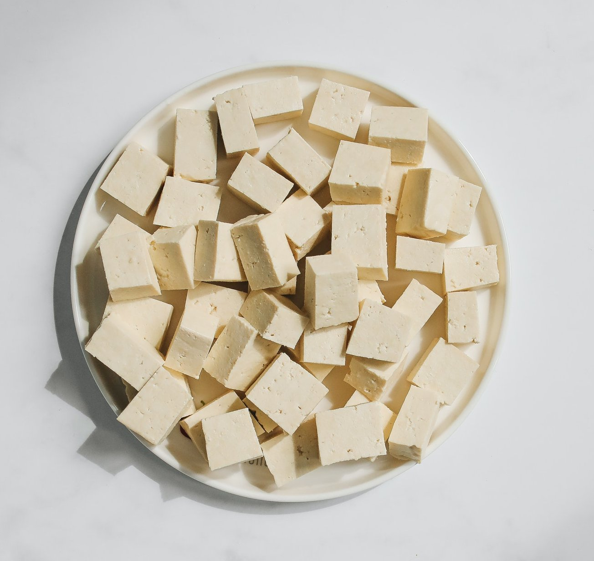

Tofu General Tao

Tofu, a great ally for vegan recipes
Tofu genreal Tao is a plant-based dish composed of
fried-tofu, sweet sauce and bunching onions. It is served with basmati rice for best results.
Ingredients
- Tofu (1 bloc)
- Bunching onions (3)
- Garlic clove(1)
- Canola oil
- Tamari sauce (4 Tbs)
- Soy sauce (2 Tbs)
- Vineger(3 Tbs)
- Sesame oil (1 1/2 Tsp)
- Ketchup (4 Tbs)
- Cornstarsh (7 Tbs)
- Water (1 cup)
- Cayenne pepper (facultative)
- Sesame seeds (for presentation)
Preparation
Tofu
- Cut the tofu in cubes.
- Put 4 Tbs of cornstarsh in a bowl, add the tofu and stir.
- Preheat some canola oil in a pan and fry the tofu.
Sauce
- In a pan, roast the bunching onions and the garlic clove for 3-5 minutes.
- Meanwhile, in a measuring cup (or a bowl), pour the water, the tamari sauce,
the soy sauce, the vinegar, the sesam oil, the ketchup and the remaining cornstarch (3 Tbs) and stir.
- Pour the content of the measuring cup in the pan and stir until the sauce thickens.